Separate review data. The running app has 270 demo XP and a visible REVIEW PROFILE banner. Real progress is preserved in its own normal profile.
See the actual installed window.
Before pictures use installed baseline 8b0a6ad. During / After pictures come from real isolated packaged-app runs with disposable data. Click a picture to enlarge it. Do the revealing clicks in DailyXP itself.
Focus & Journey
The full daily-work experience was squeezed into the shell panel.
Prepared locally: The local app has “Build the Redis command router” selected for 45 minutes.
- Click Start Session in the actual DailyXP window.
- Try Pause Session, then Resume Session.
- Click Finish Session, then Journey. The Session appears in history; Done on the Task is separate.
Look for
A running Session has an immediate timer and controls. Finished work appears in Journey.
Before
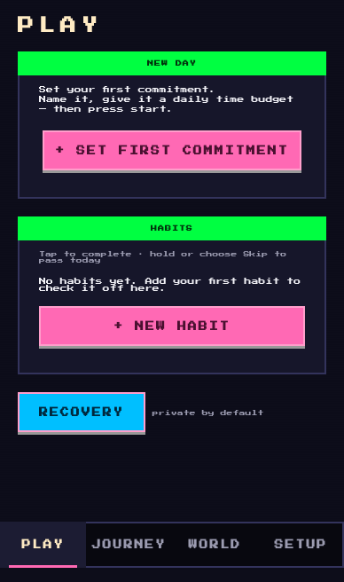
11. The old panel held the whole work loop.
During
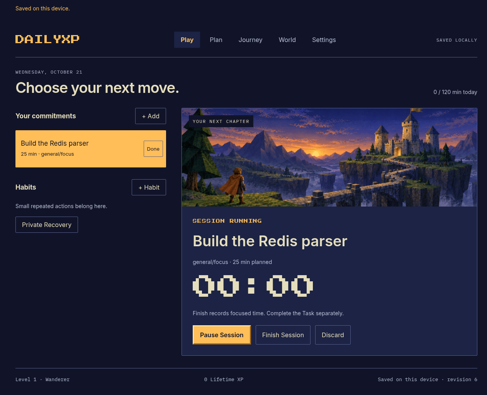
22. Pause and Finish sit beside the running Session.
After
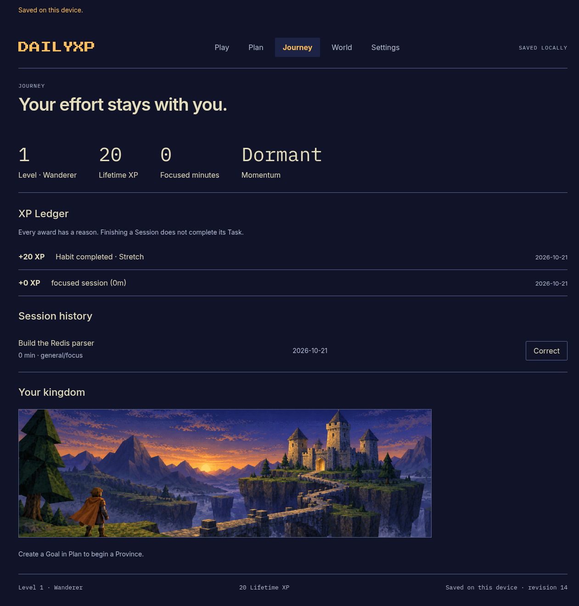
33. History retains the Session and offers Correct.
Companion & XP
The shell plugin owned the full product instead of acting as a compact desktop companion.
Prepared locally: The top-bar companion is connected to the review app. “Read something useful” is ready to complete.
- Start a Session in DailyXP; right-click its top-bar label to pause or resume.
- Left-click that label to open or focus the full application.
- On Play, scroll to Habits and complete Read something useful. Look for the brief +20 XP label.
Look for
The bar shows only compact status and safe earned-XP feedback. Private track names stay out.
Before
11. The old product opened as a shell panel.
During
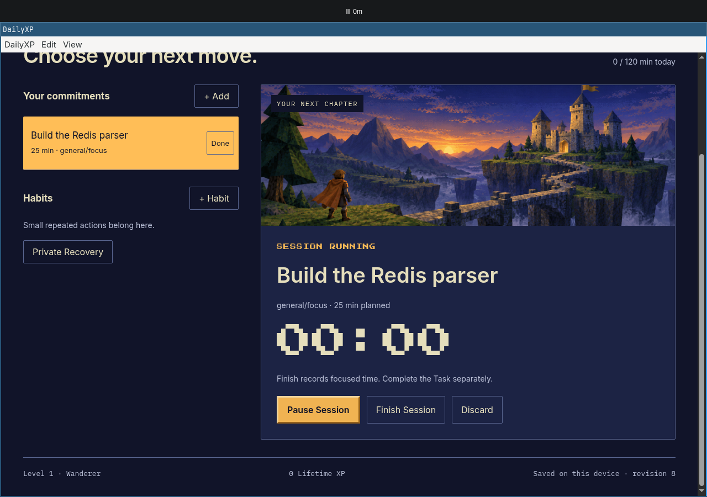
22. The private test shows the live Session label.
After
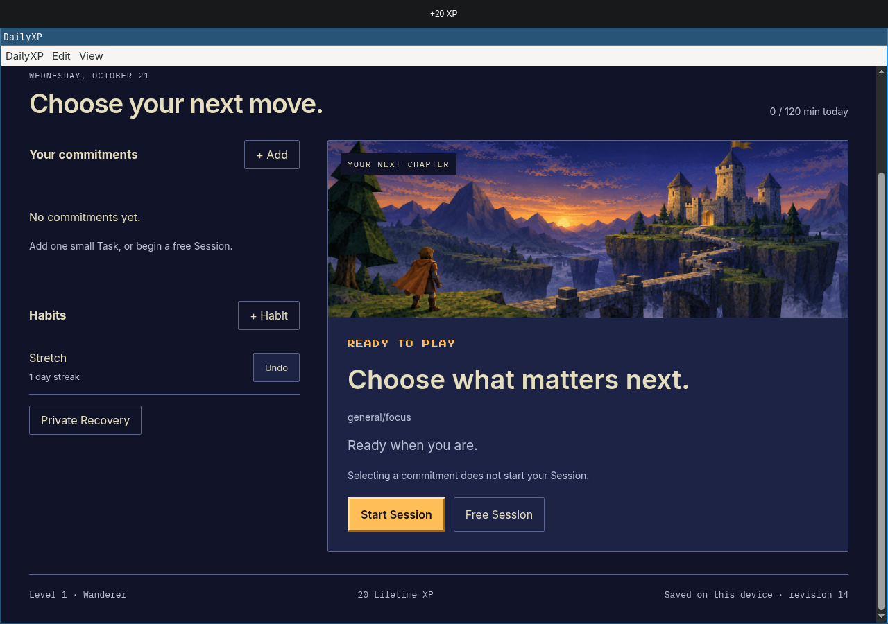
33. New Habit XP reaches the real companion.
Planning
Planning controls were crowded into the narrow Setup panel.
Prepared locally: Plan contains Learn systems programming, its completed checkpoint, a Routine and editable Tasks.
- Click Plan, then Edit beside Learn systems programming.
- Inspect the Goal fields, then press Escape. No typing is needed.
- Find Finish the parser. Its completed label and the 250 XP award are already prepared for review.
Look for
Goals, Milestones, Habits and Routines have room to inspect and edit. Completed associations stay attached.
Before
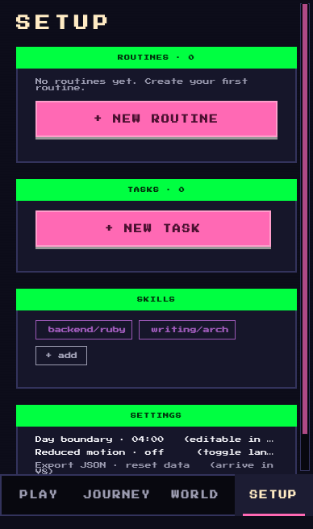
11. Planning shared the old narrow Setup screen.
During
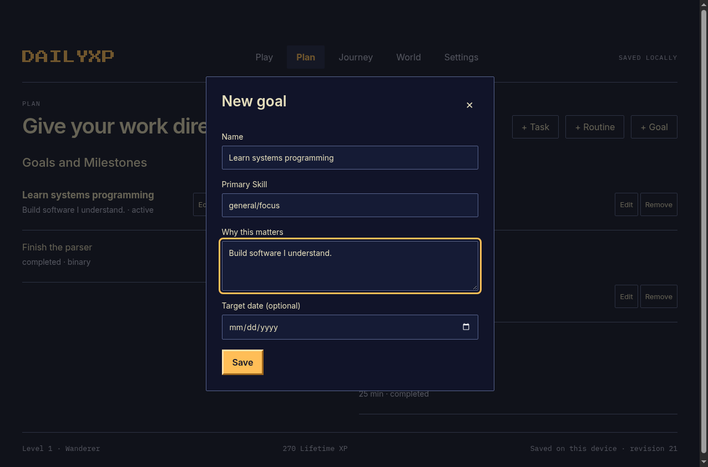
22. The real Goal form has readable fields and visible focus.
After
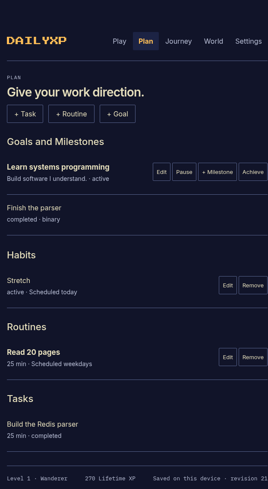
33. A completed checkpoint survives backup transfer.
Private Recovery
Private progress needed its own clear entry and exit in the new full application.
Prepared locally: A disposable Private review track is prepared; the app starts with it hidden.
- On Play, click Private Recovery, then Open private tracks.
- Inspect Private review track. This is demonstration data.
- Click Hide tracks, or leave and return. The privacy gate should reappear.
Look for
Track details are visible only after opening the private view and disappear when it is hidden.
Before
11. Recovery entered from the original panel.
During
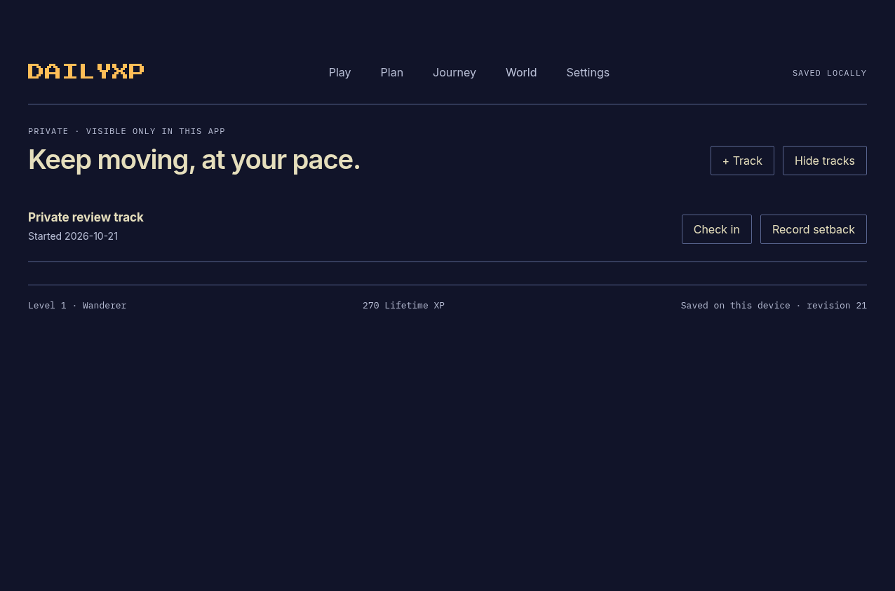
22. Hide tracks is beside the private view controls.
After
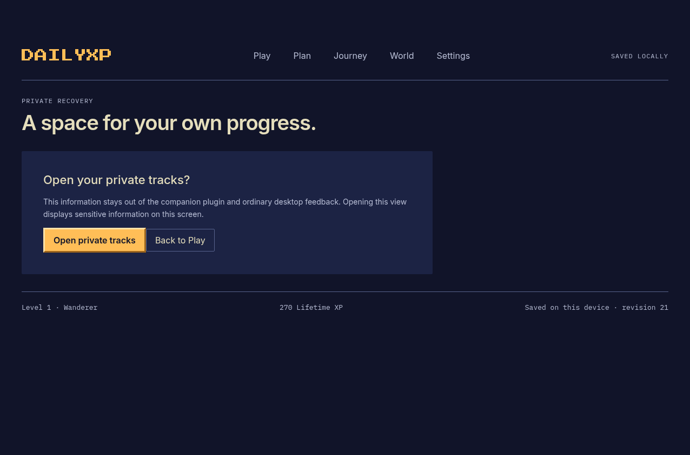
33. The gate returns; no track name remains visible.
Settings & backups
Settings and backup entry were buried at the bottom of the old plugin panel.
Prepared locally: The app has a separate Settings page. Personal source data is backed up; review uses its own profile.
- Click Settings to inspect the day boundary and Reduce motion.
- Click Export backup. Choose a local filename in the native Save dialog.
- Save it. The dialog closes and a JSON backup is written to your chosen location.
Look for
Export copies the current profile. Import into an empty profile preserves its journal and earned XP.
Before
11. The old Settings area sat below planning controls.
During
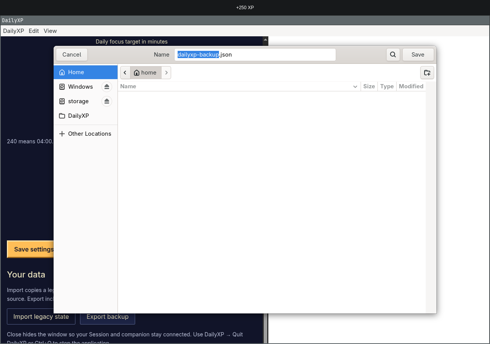
22. The actual native Save button writes the backup.
After
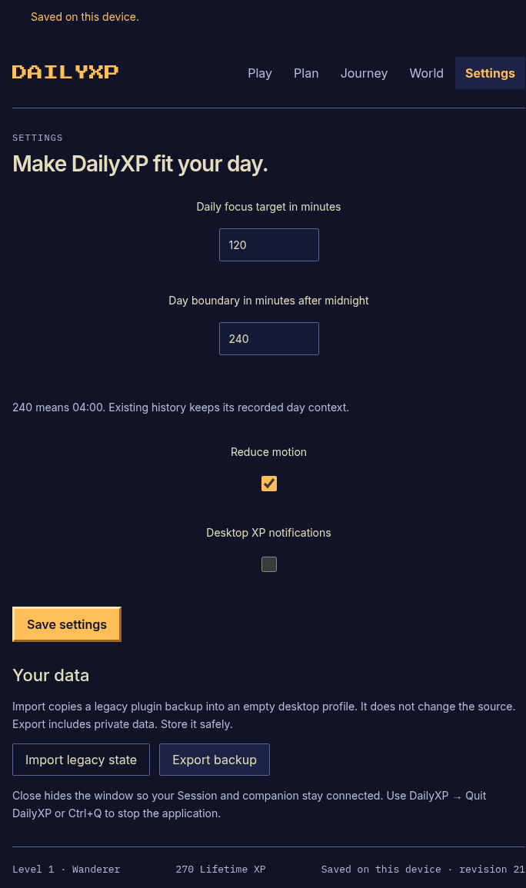
33. DailyXP returns to Settings after the verified export.